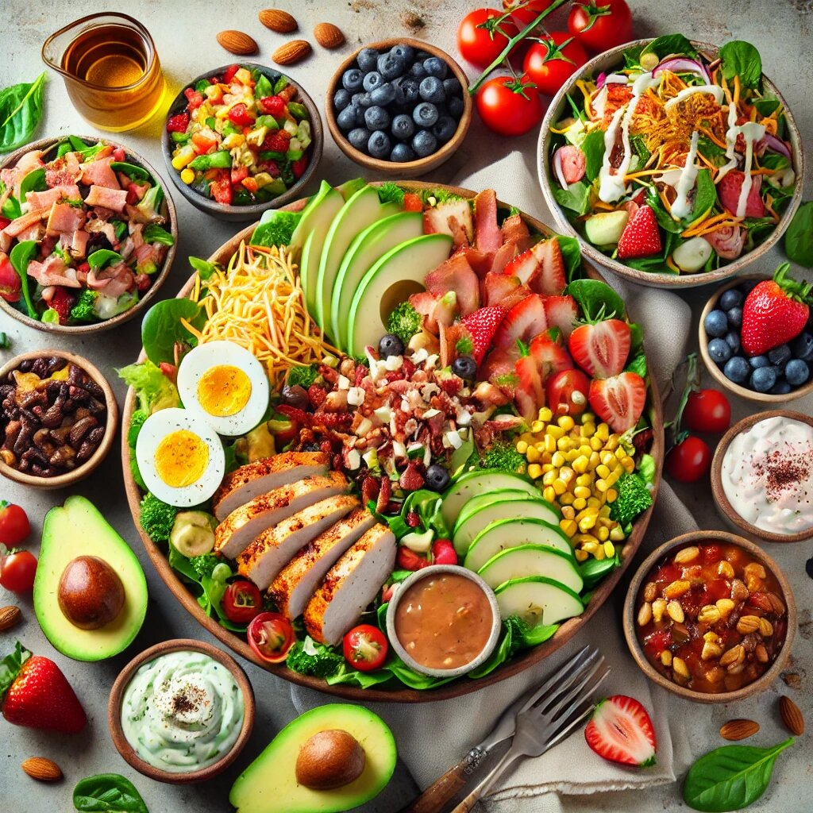

When it comes to the Salads menu, Chick-fil-A knows how to impress. Whether you’re on a health kick, looking for something light, or just in the mood for crisp greens and bold flavors, Chick-fil-A has got you covered. Let’s dive into the delicious world of Chick-fil-A Salads menu, complete with calorie counts and their tantalizing dressings.
Chick-fil-A doesn’t just toss some lettuce in a bowl and call it a day. They take salads seriously, offering fresh, thoughtfully crafted options that can make even the biggest salad skeptic reconsider.
The Cobb Salad is a crowd-pleaser for a reason. It’s a protein-packed, flavorful dish that feels indulgent but is still on the healthier side. This salad features a blend of Romaine lettuce and baby greens, topped with shredded Monterey Jack and cheddar cheese, crumbled bacon, hard-boiled eggs, grape tomatoes, and Chick-fil-A's signature chicken nuggets, sliced and served warm.
Fun Fact: Cobb Salad has so much going on, it’s like the social butterfly of the salad world—always making new friends (or flavors) with every bite.
If you’re craving something with a kick, the Spicy Southwest Salad is your go-to. This salad combines mixed greens with a Tex-Mex twist, including grape tomatoes, a blend of Monterey Jack and cheddar cheeses, spicy grilled chicken, and a colorful mix of roasted corn and black beans.
Hot Tip (literally): It’s spicy enough to wake up your taste buds but not so spicy that you’ll need a fire extinguisher. Perfect for those who like their salads with a side of sass.
The Market Salad is the epitome of freshness, perfect for anyone looking for a light yet satisfying meal. It’s a mix of fresh greens, crumbled blue cheese, red and green apples, strawberries, and blueberries. The pièce de résistance? Grilled chicken strips that round out this salad beautifully.
Berry Honest: This salad feels like taking a picnic to a farmer’s market—minus the ants.
While not technically a full salad, the Kale Crunch Side deserves its moment in the spotlight. It’s a simple yet sophisticated mix of kale, green cabbage, and a light roasted almond topping, served with an apple cider vinaigrette.
Crunch Time: The Kale Crunch Side is proof that sometimes less really is more—except when it comes to the almonds. More almonds, please!
A salad without dressing is like a movie without popcorn—just not the same. Chick-fil-A’s dressings are the perfect companions to their salads, each crafted to complement the flavors of the greens and toppings.
Chick-fil-A’s salads are more than just a side dish—they’re an experience. Here’s what sets them apart:
Chick-fil-A’s salads are proof that eating healthy doesn’t have to be boring. With their variety of flavors, fresh ingredients, and irresistible dressings, there’s something for everyone—whether you’re a health nut, a salad skeptic, or just someone who loves great food.
So, the next time you’re at Chick fil-a, don’t just wing it (pun intended). Give their salads a try—you might just find your new favorite meal!
And remember, life’s too short for boring salads, so make it a Chick-fil-A salad kind of day. 🌱